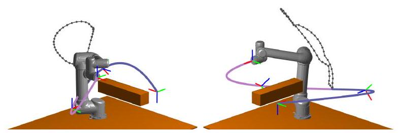

Optimal Task-Space Tracking with Minimum Manipulator Reconfiguration
最小机械臂重配置下的最优任务空间跟踪
Tong Yang Student Member, IEEE, Jaime Valls Miro Member, IEEE,
汤洋 学生会员，IEEE，海梅·瓦尔斯·米罗 会员，IEEE，
Yue Wang Member, IEEE and Rong Xiong Member, IEEE
岳望 IEEE 会员 与 熊荣 IEEE 会员
Abstract 摘要
An optimal solution to the task-space tracking problem using a non-redundant manipulator is proposed. This is a recurring occurrence in automated manufacturing settings, e.g. welding, deburring, painting, or quality control inspections. Given a pre-defined path for the end-effector to follow, there may not exist a joint-space continuous solution for task-space tracking when the non-linear manipulator kinematics and collision avoidance with obstacles in the workcell are considered. This introduces undesirable manipulator reconfigurations where the end-effector is required to deviate temporarily from the predefined path. The unwanted motion results in pausing taskspace tracking, often incurring not only ineffective time and energy demands but potentially compromising the quality of the task at hand due to the additional discontinuities. An algorithm is proposed that provides a globally optimal perspective to the choice of suitable joint-space connected segments so that the minimum number of manipulator reconfigurations during task-space tracking is guaranteed. By carefully selecting the inverse kinematic solutions, all sequences ensuring minimum reconfigurability are proven collected by Dynamic Programming. Moreover, a faster greedy strategy is suggested to increase the computational efficiency of the tracker whilst still preserving global optimality and completeness. The effectiveness of the proposed algorithm is validated against traditional sampling-based solvers in simulation and illustrated on challenging real-world tracking experimentation with a Universal Robotics manipulator and a curved-surface object, depicted also in an accompanying video. An open-source implementation has also been provided for the benefit of the robotics community.
针对非冗余机械臂在任务空间跟踪问题中的最优解决方案被提出。这一问题在自动化制造环境中频繁出现，如焊接、去毛刺、喷漆或质量检测等。当给定末端执行器需遵循的预定路径时，考虑到非线性机械臂运动学及工作单元内障碍物避让，可能不存在关节空间的连续解。这导致末端执行器需临时偏离预定路径，引发不期望的机械臂重构。此类非预期运动导致任务空间跟踪暂停，不仅造成时间和能源的无效消耗，还可能因额外的间断性而影响任务质量。本文提出一种算法，从全局最优角度选择合适的关节空间连续段，确保在任务空间跟踪过程中机械臂重构次数最少。 通过精心挑选逆向运动学解，动态规划证实了所有确保最小可重构性的序列均已收集。此外，提出了一种更快的贪婪策略，以提高跟踪器的计算效率，同时仍保持全局最优性和完整性。所提算法的有效性通过模拟与传统采样基求解器的对比得到验证，并在具有 Universal Robotics 机械臂和曲面物体的挑战性实际跟踪实验中得以展示，相关视频亦同步呈现。为惠及机器人学界，还提供了开源实现。
Index Terms-Intergrated Planning and Control, Motion Control, Manipulation Planning
索引术语-集成规划与控制、运动控制、操作规划
I. INTRODUCTION 一、引言
THe task-space non-revisiting tracking problem (TNTP) of a manipulator [1] is a fundamental module that appears often in real-world applications, e.g. welding [2], inspection [3] [4] or other general maintenance duties [4]. In these applications, the task-space path for a manipulator equipped with the appropriate tool is generally pre-defined [5], and the problem is to generate a valid manipulator joint-space[1]
机械臂的任务空间非重访跟踪问题（TNTP）[1] 是现实世界应用中常见的基本模块，例如焊接[2]、检测[3][4]或其他一般维护任务[4]。在这些应用中，配备适当工具的机械臂的任务空间路径通常是预定义的[5]，问题在于生成有效的机械臂关节空间轨迹 [1] 。

task-space tracking with wrist-flipped configurations
任务空间跟踪与翻转腕部配置
the second part of task-space tracking with wrist-unflipped configurations
腕部未翻转配置下的任务空间跟踪第二部分
Fig. 1. Illustration of a welding task using a non-redundant manipulator. The intersecting curve of two cylinders, as well as the EE pose during the task is assumed well-defined. At the end of the first segment of continuous tracking (depicted in green), the wrist would hit the forearm if the manipulator moved further along the path. thus, in order to continue tracking the desired path, the manipulator must adopt a different configuration pose, in this case the wrist-unflipped pose is shown for illustration.
图 1. 使用非冗余机械臂进行焊接任务的示意图。两个圆柱体的相交曲线以及任务期间的末端执行器（EE）姿态均假设已明确定义。在连续跟踪的第一段结束时（以绿色表示），若机械臂继续沿路径移动，手腕将与前臂发生碰撞。因此，为了继续跟踪预定路径，机械臂必须采用不同的配置姿态，图中所示为手腕未翻转的姿态，以供说明。
trajectory ensuring the end-effector (EE) visits each point on the task-space path in order, and exactly one time [6]. However, a continuous singularity-free joint-space trajectory may be impeded by the manipulator kinematic constraints, and the motion made even more restricted by the obstacles present in the environment. As such the manipulator may be forced to undertake joint-space reconfigurations resulting in the EE departing from the pre-assigned path. The reconfiguration detour often induces not only unwelcome time and energy costs from an efficiency standpoint, but also imposes undesirable discontinuities that may have severe effects in the end results of the task at hand, e.g. during welding or painting. The problem is further compounded by factors such as (a) clutter in the operating envelope, (b) complex traversal paths, and (c) lack of redundancy in the manipulator's kinematic chain. In all these common eventualities, joint-space motion is more likely truncated, thus rarely producing fully continuous joint-space trajectories for a pretended task-space path. More
确保末端执行器（EE）按顺序且仅一次访问任务空间路径上的每个点[6]。然而，连续无奇异点的关节空间轨迹可能受机械臂运动学约束的阻碍，且环境中的障碍物进一步限制了运动。因此，机械臂可能被迫进行关节空间重构，导致末端执行器偏离预设路径。这种重构绕行不仅从效率角度带来不受欢迎的时间和能量成本，还引入了可能导致任务结果严重恶化的不期望的间断性，例如在焊接或喷漆过程中。问题因以下因素而加剧：(a) 操作范围内的杂乱，(b) 复杂的行进路径，以及(c) 机械臂运动链缺乏冗余。在这些常见情况下，关节空间运动更易被截断，因此很少能产生完全连续的关节空间轨迹以匹配假想的任务空间路径。
critically perhaps, there is no known mechanism to guarantee path lift-off optimality during the planning phase.
或许关键在于，目前尚无已知机制能在规划阶段确保路径起飞的最优性。
An illustration of the TNTP problem applied to a figurative welding task is depicted in Fig. 1] Let the task-space path be the intersected curve between the two cylinders. To trace the path section closer to the manipulator base (EE path shown in green), the manipulator adopts the wrist-flipped configurations. However, there is limited reachability for the manipulator under this configuration in the far side of the path (EE tracking shown in blue in the bottom row, traversed later), as such the manipulator must readjust its pose and choose to adopt a wrist-unflipped configuration. During the rearrangement, an undesirable motion of the EE path (shown in black) is introduced, together with the inevitable suspension of the path tracking at the point of take-off and re-landing. Finally, the manipulator is able to finish the tracking of the desired path with one pose reconfiguration (the latter part of EE tracking is depicted in blue).
图 1 展示了 TNTP 问题在象征性焊接任务中的应用：设任务空间路径为两圆柱体相交曲线。为沿靠近机械臂基座的路径段行进（绿色所示末端执行器路径），机械臂采用翻腕构型。然而，在此构型下，路径远端（底部蓝色所示末端执行器追踪，稍后经过）的可达性受限，因此机械臂需调整姿态，转而采用非翻腕构型。调整过程中，引入了不理想的末端执行器路径移动（黑色示出），并伴随起飞与重新着陆点的路径追踪不可避免的中断。最终，机械臂通过一次姿态重构（后半段末端执行器追踪以蓝色描绘），完成了预定路径的追踪。
A key observation in this setting is the natural discontinuity between different inverse kinematics (IK) solutions of the same EE pose when discarding singular configurations: between an elbow-up configuration and an elbow-down configuration there must be a transition through a singular elbow-straight configuration, the neighbourhood of which is generally disregarded during planning [7], particularly in industrial settings given a manipulator's controller ability to deal effectively with perturbations along singular dimensions [8]. As such, only the pairwise connectedness of valid IK solutions for consecutive EE waypoints needs consideration, and the problem of minimising the number of manipulator reconfigurations can be transformed into an efficient model to select connected pairs of IK solutions (as will be described in further detail in Section III)
在此情境下，一个关键的观察是，当舍弃奇异构型时，同一末端执行器（EE）姿态的不同逆向运动学（IK）解之间自然存在的间断性：从肘上构型到肘下构型，必然要经过一个肘直的奇异过渡构型，在规划过程中通常会避开这一邻域[7]，尤其在工业环境中，考虑到机械臂控制器有效处理奇异维度扰动的能力[8]。因此，仅需考虑连续末端执行器航点间有效 IK 解的成对连通性，最小化机械臂重配置次数的问题便可转化为一种高效模型，用以选择连通的 IK 解对（详见第三节进一步阐述）。
In this paper, we discuss the optimal solution to the TNTP of non-redundant manipulators. Optimality in this context translates to the minimum number of EE deviations from the pre-defined path. The problem constitutes a generalisation of the classic task-space tracking problem seeking a jointspace continuous trajectory, essentially a zero-reconfiguration solution to the TNTP, if it exists. Whilst for the cases where no zero-reconfiguration solution prevails, the assignment can be regarded as "failed" by existing (sampling) algorithms. However, the outcome via the proposed TNTP optimal scheme can now guarantee a solvable min-reconfiguration solution regardless. The contributions of this paper can be summarised as:
本文探讨了非冗余机械臂 TNTP 问题的最优解。在此背景下，最优性意味着末端执行器偏离预定路径的偏差次数最少。该问题是对经典任务空间跟踪问题的推广，旨在寻求关节空间连续轨迹，实质上是对 TNTP 的零重构解决方案，若存在的话。对于那些不存在零重构解决方案的情况，现有（采样）算法可能将其视为“失败”。然而，通过提出的 TNTP 最优方案，现在可以确保无论何种情况都能得到可解的最小重构解决方案。本文的贡献可概括为：
- A generalisation of the manipulator task-space tracking task into a TNTP with minimum reconfigurations, which is shown solvable.
将机械臂任务空间跟踪任务概括为最小重构的 TNTP，并证明其可解性。 - A computationally tractable solver.
一个计算上易于处理的求解器。 - The open-sourcing of the algorithm.
该算法的开源化 。
The remainder of this paper is organised as follows 1 Section II reviews and contextualised the problem within the existing literature. Section IIII shows that the optimal non-[2]
本文余下部分安排如下：第二节回顾并结合现有文献对问题进行定位。第三节表明，最优非零解存在。
.jpg)
Fig. 2. Demonstration of the joint-space structure near singularities. The adoption of a manipulability measure implicitly forms a gap between disjointed sets of non-singular configurations. (a) A suitable choice of joint-space connectivity measure will provide correct judgment of connectedness between configurations (b) An unsuitable choice of , where configurations from different sets might be mistakenly regarded as continuous.
图 2. 奇异点附近关节空间结构的展示。采用操作性度量隐含地在非奇异构型的不连通集合间形成间隙。(a) 选择合适的关节空间连通性度量 ，能正确判断构型间的连通性；(b) 若选择不当的 ，可能导致来自不同集合的构型被错误视为连续。
redundant TNTP solution can be transformed into an optimal assignment of joint-space IK solutions. Section IV proposes a solver of the non-redundant TNTP, including a detailed algorithmic diagram, guaranteeing completeness and the uncovering of all the optimal solutions. Experimental results from simulations and on an actual non-redundant manipulator are collected in Section V, with final concluding remarks gathered in Section VI
冗余 TNTP 解决方案可转化为关节空间逆运动学解的最优分配。第四部分提出了一种非冗余 TNTP 求解器，包含详细的算法流程图，确保完整性并揭示所有最优解。第五部分收集了模拟实验及实际非冗余机械臂上的实验结果，最终的总结性评论则汇总于第六部分。
II. RELATED WORK 二、相关工作
The task-space tracking problem of a robot manipulator is an established research topic in the literature. Given a task-space path, the valid non-singular manipulator inverse kinematic (IK) solutions [9] have been observed to form constrained subsets of the manipulator joint-space. When the manipulator transits between disjointed sets, the joint-space trajectory connecting configurations from disjointed sets will transition through at a singular state, in all likelihood making the end-effector veer off the pre-defined path, thus incurring an undesirable pose reconfiguration.
机器人操作手的任务空间跟踪问题是文献中一个成熟的研究课题。给定一个任务空间路径，有效的非奇异逆运动学（IK）解[9]已被观察到形成操作手关节空间的受限子集。当操作手在不相交的集合之间转换时，连接来自不相交集合的配置的关节空间轨迹很可能会通过奇异状态过渡，从而导致末端执行器偏离预定路径，进而引发不期望的姿态重构。
Existing algorithms focus on a local trajectory generation for task-space tracking, i.e., given the manipulator's current configuration with the EE docked on the pre-defined path at a given orientation, generate a control strategy for each manipulator joint such that the EE moves along the path. Redundancy of the manipulator has generally been assumed [10] so that there exists an ample set of joint-space continuous configurations for continuous task-space tracking, among which valid singular configurations also exist to bridge non-singular configurations [11]. Since the algorithms only need to locally generate an instant motion, they are more effectively referred to as "task-space controllers" [12]. When no local continuous tracking motion can be found, a joint-space path planner will be adopted to find an unrestricted motion towards a configuration ensuring the EE visiting the next task-space point.
现有算法侧重于任务空间轨迹跟踪的局部轨迹生成，即，在机械臂当前配置下，末端执行器（EE）已对接在预定义路径并具有特定朝向时，为每个机械臂关节生成控制策略，确保 EE 沿路径移动。通常假设机械臂存在冗余性[10]，因此存在大量关节空间连续配置以实现连续任务空间跟踪，其中也包含有效的奇异配置，用于连接非奇异配置[11]。由于算法仅需局部生成瞬时运动，它们更应被称为“任务空间控制器”[12]。当无法找到局部连续跟踪运动时，将采用关节空间路径规划器来寻找不受限的运动，以确保 EE 到达下一个任务空间点。
However, the structure of valid IK configurations becomes further scattered when the manipulator is non-redundant [13], with obstacles in the environment compounding this condition [14], since each connected set of valid IK solutions has only the same dimension as its task-space preimage (e.g., a curve in 6D space as is the case here). Furthermore, no
然而，当机械臂非冗余时，有效逆运动学配置的结构变得更加分散，环境中障碍物的存在加剧了这一状况，因为每个相连的有效逆运动学解集仅与其任务空间原像具有相同的维度（例如，此处情况为 6 维空间中的一条曲线）。此外，并无
TABLE I 表一
LIST OF NOTATIONS 符号列表
| Symbol | Meaning |
|---|---|
| number of task-space waypoints 任务空间航点数量 |
|
| task-space path 任务空间路径 | |
| the -th configuration to visit pose 访问姿态 的第 种配置 |
|
| the valid robot state corresponding to 对应于 的有效机器人状态 |
|
| a sequence of configurations for all task-space poses 一系列所有任务空间姿态的配置序列 |
|
| the number of reconfigurations in the given sequence 给定序列中的重配置次数 |
valid singularity exists for possible utilisation: a non-redundant manipulator in a singular state means it has lost the ability to dispense with perturbations imposed on the EE. As a result, a relatively sizeable task-space path is unlikely to find a continuous joint-space trajectory via traditional task-space controllers, and the manipulator will have to resort to adopting frequent pose reconfigurations during tracking.
有效奇异性存在于可能的利用中：处于奇异状态的非冗余机械臂意味着它已丧失抵御末端执行器上扰动的能力。因此，通过传统任务空间控制器，相对较大的任务空间路径难以找到连续的关节空间轨迹，机械臂在跟踪过程中不得不频繁采取姿态重构。
More recent existing works [15] [16] have proposed cellular decomposition and graph theory in solving the optimal surface coverage task, also explicitly considering the joint-space connectivity of IK solutions to visit different task-space points. The nature of the surface cell data makes these proposed solvers exponential. In contrast, the work proposed in this manuscript focuses on the more persistent tracking problem, where the computational efficiency for possible real-time applications needs to be carefully considered. Given the reduced dimensionality of the problem, a dynamic programming (DP) approach with an efficient greedy strategy can thus be adapted to reveal a globally optimal and complete solution.
近期已有研究[15][16]提出利用细胞分解与图论方法解决最优表面覆盖任务，并明确考虑了逆运动学解的关节空间连通性，以便访问不同的任务空间点。表面细胞数据的本质使得这些提出的求解器呈指数级复杂。相较之下，本文提出的工作侧重于更为持续的跟踪问题，其中对于可能的实时应用，计算效率需仔细考量。鉴于问题维度的降低，可采用动态规划（DP）结合高效贪心策略的方法，以揭示全局最优且完备的解决方案。
III. Problem Modeling 三、问题建模
In this section, the non-redundant manipulator TNTP is modelled. The commonly utilised "planning-controlling" scheme is adopted to tackle the problem. During the planning stage, and subject to a given task-space path, a joint-space collision-free path is constructed, where consecutive configurations are "close" enough such that their connectedness can be guaranteed. Subsequently, during the control stage, joint-space waypoints are interpolated and assigned suitable reaching times and joint velocities. The focus of this work is on the planning stage, where the manipulator IK relation is not one-to-one but one-to-many [9]. As such, selecting one from all valid IK solutions for each task-space waypoint becomes the fundamental problem. And the objective is to do it in a way that reconfigurations are minimised, and guaranteed at the planning stage. The discussion about control is assumed and outside the scope of the work. A table of notations is provided in Table ■
本节中，对非冗余机械臂 TNTP 进行建模。采用常见的“规划-控制”方案来解决问题。在规划阶段，根据给定的任务空间路径，构建关节空间无碰撞路径，其中连续配置足够“接近”，以确保其连通性。随后，在控制阶段，对关节空间航点进行插值，并分配适当的到达时间和关节速度。本工作的重点在于规划阶段，此时机械臂的逆运动学关系并非一对一，而是一对多[9]。因此，从每个任务空间航点的所有有效逆运动学解中选择一个成为基本问题。目标是在规划阶段以最小化重构的方式实现这一选择。控制方面的讨论不在本工作范围内。符号表见表■。
A. Task-Space Discretisation and Valid Manipulator States
A. 任务空间离散化与有效机械臂状态
Let the non-redundant TNTP problem be discussed in the ordinary 3D tracking scenario, where the manipulator is 6 DoF. The task-space path to be tracked is parameterised by a function curve where each point is a 3D pose of the manipulator EE. If there are multiple intermediate stations for the EE to visit in order, we use a cubic interpolation to generate a continuous curve. Then, a suitable number (say ) of points are sampled from the curve, and we get a series of 3D EE poses . For each point , knowing the manipulator kinematics, the manipulability constraints [17], and the obstacles in the surrounding environment, a set of valid IK solutions are collected, denoted by where denotes the number of valid IK solutions for visiting point . The manipulability constraint filters all singularities, which also excludes a neighbouring set of nonsingular configurations of the singularities and thus forms a non-zero width gap between disjointed sets of nonsingular configurations. See Fig. 2 for an illustration. If two non-singular configurations are joint-space connectable only by visiting singularities, as long as we set a small distance measure as shown in Fig. 2(a), they will not be mistakenly regarded as connectable configurations. However, note that the width of the gap is implicit, so there does not exist an explicit formula for . How to choose a suitable is to be presented in the next paragraph.
在常规的三维跟踪场景中讨论非冗余 TNTP 问题，其中机械臂为 6 自由度。待跟踪的任务空间路径由函数曲线 参数化，其中每个点 代表机械臂末端执行器（EE）的一个三维姿态。若 EE 需按序访问多个中间站点，我们采用三次插值生成连续曲线。随后，从该曲线中适当抽取若干点（设为 ），得到一系列三维 EE 姿态 。对于每个点 ，基于机械臂的逆运动学、可操作性约束[17]及周围环境中的障碍物，收集一组有效的逆解，记作 ，其中 表示访问点 时的有效逆解数量。可操作性约束滤除了所有奇异点，并排除了奇异点邻近的一系列非奇异构型，从而在不相交的非奇异构型集合间形成了一个非零宽度的间隙。具体示例请参见图 2。 若两个非奇异构型仅通过经过奇异点才能在关节空间内相连，只要我们如 Fig. 2(a)所示设定一个微小的距离度量 ，它们就不会被误认为是可连接构型。但需注意，间隙宽度是隐含的，因此并不存在针对 的明确公式。如何选取合适的 将在下一段中阐述。
For each valid manipulator configuration we assign a state as follows: For the first EE pose , let be distinct numbers, such as . For the -th EE pose, we match to the IK solutions of previous point whose state have been assigned.
对于每个有效的操作器配置 ，我们如下分配一个状态 ：对于第一个末端执行器姿态 ，设 为不同的数字，例如 。对于第 个 末端执行器姿态，我们将 匹配到先前点 的逆运动学解，其状态 已被分配。
- If is joint-space continuous to a previous configuration , then .
如果 在关节空间中连续过渡到先前的配置 ，则 。 - If is not connectable to any configuration in is assigned a new state different from all existing states.
若 无法连接到 中的任何配置，则会被赋予一个与现有所有状态均不同的新状态。 - If is connectable to multiple IK solutions of the previous point, this indicates that different IK solutions of the same task-space pose are connectable without visiting singularities. This is a wrong judgment because of inappropriate waypoints selection and a too coarse jointspace connectivity measure. See Fig. 2(b) for an illustration. Then the task-space should be re-sampled with a higher resolution, the connectivity measure should be set smaller, and all above-mentioned processes need to be re-done.
若 可连接至前一点的多组逆向运动学解，则表明同一任务空间姿态下的不同逆向运动学解无需经过奇异点即可连接。此判断错误，源于航路点选择不当及关节空间连通性度量过于粗糙。参见图 2(b)以获得说明。随后，任务空间应以更高分辨率重新采样，连通性度量应设得更小，上述所有流程均需重新执行。
B. The Task-Space Non-Revisiting Problem (TNTP)
B. 任务空间非重访问题（TNTP）
After all configurations are assigned a state, each task-space point has a set of possible states, . Note that here we have assumed the non-nullity of , as if a taskspace point is unreachable by any manipulator configuration, the TNTP problem is essentially divided into two sub-TNTP problems with the truncated task-space path segments. So the TNTP problem is finally transformed to the optimal design of state for each task-space point. A valid joint-space trajectory is a sequence of joint-space configurations, which can be represented by a vector of states,
在所有配置被赋予状态后，每个任务空间点都拥有一组可能的状态， 。需要注意的是，此处我们假设了 的非空性，因为若某任务空间点无法通过任何机械臂配置到达，TNTP 问题实质上被分割为两个子 TNTP 问题，涉及截断的任务空间路径段。因此，TNTP 问题最终转化为对每个任务空间点状态的最优设计。一个有效的关节空间轨迹是一系列关节空间配置的序列，可用状态向量表示，
and the cost is defined by the number of switches of states,
成本由状态切换次数定义
The optimal solution to the TNTP problem is to find all admissible sequences of configurations such that the cost is the globally minimum,
TNTP 问题的最优解是找出所有满足条件的配置序列，确保其成本为全局最低
IV. TNTP OPTIMAL SOLVER
IV. TNTP 最优解算器
In this section, the non-redundant TNTP problem is effectively solved, and all optimal solutions are proven collectible.
本节有效解决了非冗余 TNTP 问题，并证明了所有最优解均可收集。
A. Principle of Optimality
最优性原则
We observe that if the state of an intermediate point is assigned, then the calculation of cost becomes two independent parts. Denote the sub-TNTP problem in a similar form with less number of variables ,
我们观察到，若给定中间点的状态，则成本计算可分解为两个独立部分。记具有较少变量、形式类似的子 TNTP 问题为 。
with the cost defined similar as Eqn. (2). Let point be assigned with state , then
成本定义与公式(2)类似。设点 被赋予状态 ，则
Here the last term -1 appears because when the manipulator finishes covering the last point of the first sub-TNTP with configuration , it has actually entered the second subTNTP with configuration without EE lift-off. Then we can see that an optimal solution to the non-redundant TNTP must contain an optimal solution to the sub-TNTP, which essentially satisfies the principle of optimality for dynamic programming (DP) [18]. This motivates us to encode a partlysolved solution by the state of their frontier point: Let the state of points be assigned from point 1 to point , we denote the frontier point by the last assigned point. We group the problem states with the same cost and the same decision on the frontier point,
在此，最后一个项-1 的出现是因为当机械臂完成覆盖第一个子 TNTP 最后一个点 的配置时，它实际上已无提升地进入了第二个子 TNTP 的配置 。由此可见，非冗余 TNTP 的最优解必然包含子 TNTP 的最优解，这实质上满足了动态规划（DP）[18]的最优性原理。这促使我们通过边界点的状态来编码部分解决的方案：从点 1 到点 分配点状态，我们用最后一个被分配的点来表示边界点。我们将具有相同成本和边界点相同决策的问题状态进行分组，
In the first stage, all possible states of point 1 are collected, with sets being obviously constructed with only one element in each set. In the -th stage, the state of point has been assigned and different solutions are collected. After the state of point is assigned and the cost is updated, all solutions are re-grouped by the state of point . Only the least-cost solutions are still preserved for the subsequent iteration.
在第一阶段，收集点 1 的所有可能状态，其中集合 显然由每个集合中的单个元素构成。在 阶段，已为点 分配状态，并收集了不同解决方案。在为点 分配状态并更新成本后，所有解决方案根据点 的状态重新分组。仅保留成本最低的解决方案以供后续迭代使用。
B. Greedy Strategy B. 贪婪策略
Typically, a greedy search strategy performs significantly faster than dynamic programming since no back-tracking process is required. However, it might not guarantee global optimality (minimal cost). In this section we show that greedily choosing the continuous configurations preserves global optimality and completeness in collecting all optimal solutions.
通常，贪心搜索策略比动态规划执行速度快得多，因为它不需要回溯过程。然而，它可能无法保证全局最优性（最小成本）。在本节中，我们展示贪心地选择连续配置能保持全局最优性和完整性，确保收集到所有最优解。
The global optimality is verified by observing that in the -th stage, let there exist a state of point which is equal to ,
通过观察第 阶段，存在一个状态点 等于 ，验证了全局最优性
We know that if we assign , the cost will be always no higher than assigning other states to point , regardless of whether at the next stage point may have the same state as point . Hence, when the next unassigned point has the same possible state as the frontier point, we can discard all other possible states and directly assign this one.
我们知道，若将 分配给某点，其成本始终不会高于将其他状态 分配给该点 ，无论下一阶段点 是否可能与点 状态相同。因此，当下一个未分配点与边界点具有相同可能状态时，我们可以排除所有其他可能状态，直接分配此状态。
Next, we show that no optimal solution is missed by the greedy choice of states. If the greedy strategy is not complete, that means an optimal solution contains one of the discarded states by the greedy selection of state, which will be proven retrievable by the collected optimal solutions. Continuing the deduction from Eqn. (7), we have
接下来，我们证明通过贪心选择状态不会遗漏任何最优解。如果贪心策略不完备，意味着某个最优解包含贪心选择过程中舍弃的某个状态，我们将证明这些被舍弃的状态能通过收集到的最优解重新找回。从等式（7）继续推导，我们有
(Eqn. (7)) （式(7)）
.jpg)
Note that the term written in red has a higher cost than the term written in blue, so a discarded state of the current point contributes to an optimal solution only when there exists the same state for the next point, and the algorithm assigns it to the next point at the next stage. However, the solutions are equivalent: when a point can be continuously visited together with either its previous point or its subsequent point, the two solutions are both optimal and can continuously transform from one to another by locally adjusting the point at which the EE departs the task-space path. See Fig. 3 for an illustration. Hence, all optimal solutions are proven collectible by a dynamic programming approach with the greedy utilisation of continuous manipulator configurations.
请注意，红色标注的术语成本高于蓝色标注的术语，因此当前点的丢弃状态仅在下一节点存在相同状态时，才对最优解有所贡献，算法会在下一阶段将其分配给下一节点。然而，这些解决方案是等价的：当一个点能与其前一点或后一点连续访问时，两种解决方案均为最优，并可通过局部调整 EE 离开任务空间路径的点，实现彼此间的连续转换。图 3 对此进行了说明。因此，所有最优解均已证明可通过动态规划方法结合连续机械臂配置的贪婪利用来收集。
possible states represented by blue and green markers
由蓝色和绿色标记表示的可能状态
equivalent optimal solutions which are continuously deformable
等效最优解，可连续变形
Fig. 3. Illustration of equivalent task-space tracking solutions. Given the 7 discrete points sampled from a task-space curve, two sets of joint-space connected IK solutions are represented by green and blue dots. All solutions on the right consist of a continuous tracking motion with configurations represented by green, an undesirable motion denoted by a black broken line, and a continuous tracking motion represented by blue, and they are all optimal solutions. The greedy strategy will find the last solution as it will lazily choose the configurations in green until it is not trackable.
图 3. 等效任务空间跟踪解决方案示意图。给定从任务空间曲线采样的 7 个离散点，两组关节空间连接的逆向运动学解决方案分别以绿色和蓝色点表示。右侧所有解决方案均包含由绿色表示的连续跟踪运动、由黑色虚线标记的不理想运动，以及由蓝色表示的连续跟踪运动，它们均为最优解。贪婪策略将找到最后一个解决方案，因为它会懒惰地选择绿色配置，直至无法继续跟踪。
V. EXPERIMENTS 五、实验
The proposed algorithm generates all optimal joint-space trajectories ensuring the task-space tracking of a given EE path and a minimum number of manipulator pose reconfigurations. Simulated and real-world experiments are presented in this section. In section , the detailed explanation about a case study is presented, with valid manipulator IK configurations illustrated, showing the necessity of manipulator pose re-configuration. To the authors' knowledge, there has not been an efficient algorithm for task-space tracking when the manipulator cannot follow the pre-defined path, as such all discussions were taken for redundant manipulators. So in section -B we compare the proposed algorithm with the commonly used approach of randomly selecting the next configuration when continuous tracking is impossible. In section-V-C, the proposed algorithm is tested on a real-world Universal Robots UR5 manipulator. An implementation in MATLAB has been open sourced: https://github.com/ZJUTongYang/minReconfigTaskSpaceTracking.
所提算法能生成所有最优关节空间轨迹，确保对给定末端执行器路径的任务空间跟踪，并实现机械臂姿态重配置的最小化。本节展示了模拟与真实世界的实验。在 节中，详细阐述了一个案例研究，通过有效的机械臂逆向运动学配置示例，阐明了机械臂姿态重配置的必要性。据作者所知，当机械臂无法遵循预设路径时，尚未有高效算法用于任务空间跟踪，因此所有讨论均针对冗余机械臂展开。故在 -B 节，我们将所提算法与常规方法——即连续跟踪不可行时随机选取下一配置——进行对比。在 V-C 节，该算法在真实世界的 Universal Robots UR5 机械臂上得到验证。MATLAB 实现已开源：https://github.com/ZJUTongYang/minReconfigTaskSpaceTracking。
A. Case Study A. 案例研究
A task-space tracking process is shown here as a case study of the proposed algorithm. The task-space path is generated by interpolating four EE waypoints. Some valid IK solutions are collected in Fig. 4 for better illustration of this case study. For one of the optimal tracking solutions see Fig. 5. Obstacles in the environment are a ground plane and a sphere. Because the starting point of the task-space curve is near the ground, only one IK solution is valid (marked by green dots) so the manipulator would adopt it. However, after the manipulator is about to reach the third intermediate goal, the forearm will hit the spherical obstacle, so one pose reconfiguration is required. The last configuration of the first segment of tracking is shown in Fig. 5(a) By changing to a configuration like shown in Fig. 5(b) the forearm is lifted a little, above the wrist, which makes the EE visit the third intermediate goal. However, the forearm will still hit the spherical obstacle if it continues tracking, where another pose reconfiguration is required. See Fig. 5(c), by adjusting the configuration from shoulder-right to shoulder-left, the manipulator is able to finish the tracking task without colliding the spherical obstacle. The reader is referred
此处展示了一个任务空间跟踪过程作为所提算法案例研究。任务空间路径通过插值四个末端执行器(EE)航点生成。图 4 收集了一些有效的逆向运动学(IK)解决方案，以便更清晰地说明此案例。其中一种最优跟踪解决方案见图 5。环境中的障碍物包括一个地面平面和一个球体。由于任务空间曲线的起始点靠近地面，仅有一个 IK 解决方案有效（标记为绿色点），因此机械臂将采用此方案。然而，当机械臂即将到达第三个中间目标时，前臂会与球形障碍物碰撞，故需进行一次姿态重配置。第一段跟踪的最终配置如图 5(a)所示。通过切换至图 5(b)所示的配置，前臂略微抬高，超过手腕，使得末端执行器能够访问第三个中间目标。但若继续跟踪，前臂仍将撞击球形障碍物，此时需再次进行姿态重配置。详情参见图示。 通过将配置从右肩调整至左肩，机械臂能够完成跟踪任务，同时避免与球形障碍物发生碰撞。读者请参考
Fig. 4. Illustration of valid IK solutions along the task-space path. The coloured curves show the joint-space connectivity between configurations.
图 4. 沿任务空间路径的有效逆运动学解决方案示意图。彩色曲线展示了各配置间的关节空间连通性。
Fig. 5. Illustration of a task-space tracking where two manipulator reconfigurations are required. The three segments of the continuous task-space tracking process (EE poses) are marked by blue, golden, and red colour in order. The gray curves show the trace of EE during reconfiguration.
图 5. 任务空间跟踪示意图，其中需要两个机械臂重新配置。连续任务空间跟踪过程的三个阶段（末端执行器姿态）按顺序分别以蓝色、金色和红色标记。灰色曲线显示了重新配置期间末端执行器的轨迹。
to our supplementary video to observe the full animation of this case study.
请观看我们的补充视频，以观察此案例研究的完整动画演示。
B. Comparison with Sampling-based Planners
B. 与基于采样的规划器比较
All existing solvers for task-space tracking are locally calculating a joint-space admissible trajectory, and when there is locally no valid trajectory to continue tracking, a jointspace path planner (such as the RRT [9] used in this work, as often employed in manipulator planning software such as the widely used MoveIt!! by the ROS research community, and the OPML 3 it is based on underneath) is carried out, as such the selected IK solution for visiting the next task-space point is randomly chosen. For fair evaluation, we assume the random selection of the IK solution for visiting the first task-space point, and the algorithms will greedily choose the continuous IK solutions. When the manipulator has to perform a pose reconfiguration motion, the starting pose of the next segment of task-space tracking is again randomly assigned.
现有任务空间跟踪的所有求解器均在局部计算关节空间可接受轨迹，当局部无可用轨迹继续跟踪时，便执行关节空间路径规划器（如本工作中采用的 RRT[9]，常用于 MoveIt!!等广泛使用的机械臂规划软件，以及其底层所依赖的 OPML 3），此时，访问下一任务空间点的逆向运动学（IK）解决方案随机选取。为公平评估，我们假设首次访问任务空间点的 IK 解决方案随机选择，算法将贪婪地选取连续的 IK 解。当机械臂需进行姿态重配置运动时，下一任务空间跟踪段的起始姿态再次随机指定。
An illustration of the test cases is shown in Fig. 6, whilst some relevant statistics are collected in Table [II "Num." refers to the number of manipulator pose reconfigurations generated by the algorithms. For a fair evaluation of the performance of sampling-based planners in these settings, all possible assignments of IK configurations are enumerated, and[3]
测试案例的示意图展示于图 6 中，而一些相关统计数据则汇总在表 II 内。其中，“Num.”代表算法生成的机械臂姿态重配置数量。为公平评估这些设置中采样基规划器的性能，所有可能的逆运动学配置分配均被逐一列举，且 [3]
(a) Case 1 (a) 案例 1
(b) Case 2 (b) 案例 2

(c) Case 3 (c) 案例 3
(d) Case 4 （d）案例 4
Fig. 6. Illustration of simulated comparison tests. The trajectories shown in the figures are the optimal solutions generated by the proposed algorithm.
图 6. 模拟对比测试示意图。图中所示轨迹为所提算法生成的最优解。
the mean number of pose reconfigurations for all possible situations is collected as "Mean.". The last column, "Distribution of Reconf", reflects the exact histogram (frequency distribution) of the number of reconfigurations in the resulting paths generated by sampling-based planners.
所有可能情况下的姿态重配置平均数被汇总为“均值”。最后一列“重配置分布”反映了采样型规划器生成的结果路径中，重配置次数的确切直方图（频率分布）。
Further metrics are also reported in the table for completeness. While the objective of this work is minimum lift-off task-space tracking trajectories, other criteria would also be of relevance when considering the tracking problem. There
为确保完整性，表格中还报告了其他指标。尽管本工作的目标是最小化起飞任务空间跟踪轨迹，但在考虑跟踪问题时，其他标准也同样相关。
TABLE II 表二
SiMULATION Results VERSUS SAMPLING-based PLANNERS
模拟结果与基于采样的规划器对比
| Case | Method | um. 嗯。 | Mean. 卑鄙。 | Time 时间 | Bounding Box 边界框 | Efficiency 效率 | Efficiency 效率 | Distribution of Reconf. |
|---|---|---|---|---|---|---|---|---|
| case 1 案例 1 | ours 我们的 | 2 | 6.25 | 42.58s | |
chance of optimal: | ||
| random 1 随机 1 | 7 | |
||||||
| random 2 随机 2 | 8 | |
||||||
| case 2 案例 2 | 9.96 | |
chance of optimal: 5/6541 | |||||
| ours (2/5) 我们的（2/5） | 1 | 39.06s | |
|||||
| random 3 随机 3 | 3 | |
||||||
| random 4 随机 4 | 14 | |
||||||
| case 3 案例 3 | ours ( ) 我们的（ ） | 1 | 5.10 | 47.14s | |
chance of optimal: | ||
| random 5 随机 5 | 7 | |
||||||
| random 6 随机 6 | 4 | |
||||||
| case 4 案例 4 | 13.74 | 3 | |
chance of optimal: | ||||
| ours 我们的 | 1 | 30 | |
|||||
| random 7 随机 7 | 7 | |
||||||
| random 8 随机 8 | 10 | |
Number of reconfigurations.
重配置次数。
Mean number of reconfigurations of all greedy solutions.
所有贪婪解的平均重构次数。
Excecution time. Constant joint velocity is assumed, hence shortest-length joint-space is the fastest motion. Ranges of execution time (including undesirable motions) are approximately (sampled for case 2 and 4 given the large population): (Case 1) 42.58s 157.67s, (Case 2) 39.06s , (Case 3) 47.14s 120.30s, (Case 4) 38.05s .
执行时间。假定关节速度恒定，因此关节空间最短路径即为最快运动。执行时间范围（含不理想运动）大致如下（基于大规模样本，针对案例 2 和 4 进行抽样）：（案例 1）42.58 秒至 157.67 秒，（案例 2）39.06 秒，（案例 3）47.14 秒至 120.30 秒，（案例 4）38.05 秒。
Efficiency (T): task-space tracking path length / end-effector path length.
效率（T）：任务空间跟踪路径长度 / 末端执行器路径长度。
Efficiency (J): joint-space tracking path length / the first 5-dim joint-space path length / joint-space path length.
效率（J）：关节空间跟踪路径长度 / 前 5 维关节空间路径长度 / 关节空间路径长度。
Not all optimal solutions are shown for brevity in each case. A / B: optimal solutions detailed / total number of optimal solutions.
出于简洁考虑，并非所有最优解均在每种情况下展示。A / B: 详细最优解 / 最优解总数。
Fig. 7. The real-world scenario and its corresponding simulated environment.
图 7. 真实世界场景及其对应的模拟环境。
may be motions that contain slightly more reconfigurations but shorter travelling distance, such as the "random 3" result. Ultimately, a trade-off can be derived subject to other criteria, but that falls out of scope for this work.
可能是包含略多重构但移动距离更短的运动，例如“随机 3”结果。最终，可根据其他标准得出权衡，但这超出了本工作的范围。
Taking case 1 as an example, there are 256 different greedy assignments for the segments of continuous task-space motion, among which only one solution identifies with the optimal solution (with 2 reconfigurations). A cuboid workcell admitting this motion is of size ("Bounding Box"), the length of task-space motion is , and the joint-space travelling distance is . The average number of reconfigurations is shown to be 6.25 . When looking at the binned histogram, there is around a chance the sampling-based planner will generate a solution with reconfigurations. The reader is referred to the supplementary video for further visualisations and comparatives during the resulting planning motions. Timewise, the optimal tracker ("ours") is invariably faster in all cases presented.
以案例 1 为例，连续任务空间运动的分段存在 256 种不同的贪婪分配，其中仅有一种方案与最优解（2 次重构）相吻合。容纳此运动的立方体工作单元尺寸为 （“边界框”），任务空间运动长度为 ，关节空间移动距离为 。平均重构次数显示为 6.25。观察分箱直方图，基于采样的规划器约有 的概率生成包含 次重构的解决方案。读者可参考补充视频以获取更多视觉呈现及规划运动过程中的比较分析。时间上，最优跟踪器（“我们的”）在所有展示案例中始终更快。
Note that it is not the focus of this work to exhaustively compare the performance of different joint-space planners that may be able to produce marginally better reconfiguration trajectory in relation to EE lift-off and task space continuity. It is apparent that without a mechanism to select globally optimal IK solutions to visit at the next iteration along the path, solutions based on traditional sampling-based planners will inevitably lead to unnecessary manipulator reconfigurations regardless. In fact, examples in this work have shown a nearly certainty to obtain a non-optimal choice with traditional planners ( the probability of randomly attaining the optimal solution, shown in the last column in Table II).
需要注意的是，本研究的重点并非全面比较各种联合空间规划器的性能，这些规划器可能在末端执行器离地和任务空间连续性方面产生略优的重配置轨迹。显然，若无机制在全球范围内选择最优逆向运动学解决方案作为路径下一迭代的目标，基于传统采样规划器的方案终将不可避免地导致不必要的机械臂重配置。实际上，本研究中的示例已表明，采用传统规划器几乎 确定会得到非最优选择（ 随机达到最优解的概率，如表 II 最后一列所示）。
C. Real-world Illustration
C. 现实世界示例
The proposed algorithm is also evaluated in a real-world scenario. The real-world environment is modelled into MATLAB as shown in Fig. 7. Let the task-space path be a surface curve on the sphere. The -axis of the EE is parallel to the surface normal vector, and the -axis is parallel to the tangent of the surface curve, then -axis is well-defined following the right-hand coordinates. As such the task is nonredundant for a 6-Dof manipulator. The gripper imitates a nonzero length tool whose collision model is set as a cylinder (visualisation omitted in Fig. 7(b) simulation). Fig. 8 captures the key moments, the reader is referred to the video for full visualisation. To pursue the optimal solution, the manipulator is instructed to start tracking with the configuration shown in Fig. 8(a), and continuously track the task-space path until pose
所提算法亦在真实场景中进行评估。如图 7 所示，真实环境被建模于 MATLAB 中。设任务空间路径为球面上的曲线，末端执行器（EE）的 轴与曲面法向量平行， 轴与曲面曲线切线平行，则遵循右手坐标系的 轴得以明确。因此，对于 6 自由度机械臂而言，此任务非冗余。夹持器模拟非零长度工具，其碰撞模型设定为圆柱体（图 7(b)模拟中未显示可视化）。图 8 捕捉了关键瞬间，完整可视化请参阅视频。为求取最优解，机械臂从图 8(a)所示配置开始追踪，并持续跟踪任务空间路径直至姿态。

Fig. 8. Video stills of the manipulator configurations during the real-world tests (refer to video for full sequence)
图 8. 实际测试中机械臂配置的视频截图（完整序列请参阅视频）
Fig. 8(b), where the wrist is about to hit the forearm. One pose reconfiguration from a shoulder-right configuration (Fig. 8(b)) to a shoulder-left configuration (Fig. 8(d)) becomes necessary, the interim lift-off motion captured by Fig. 8(c). The total execution time is , where , and are used for the manipulator motion in the first segment, the undesirable reconfiguration, and the second and final segment of the tracking, respectively. The manipulator is thus guaranteed to be able to complete tracking of the desired path with only 1 (optimal) pose reconfiguration.
如图 8(b)所示，手腕即将撞击前臂。从肩部右置姿态（图 8(b)）转换至肩部左置姿态（图 8(d)）成为必要，过渡的抬升动作由图 8(c)捕捉。总执行时间为 ，其中 用于机械臂在第一阶段的运动， 用于不理想的姿态重构，以及第二阶段直至最终跟踪阶段。因此，机械臂确保能以仅一次（最优）姿态重构完成对预定路径的跟踪。
VI. ConClusion 六、结论
A novel mechanism to generate an optimal joint-space trajectory for the task-space non-revisiting tracking problem (TNTP) has been proposed in this work. The optimality is translated to the minimum number of segmentations of the pre-defined path caused by nonlinear manipulator kinematics and collision with obstacles in the environment. Manipulator reconfigurations are shown to be necessary for concatenating consecutive segments of continuous task-space tracking. These undesirable deviations generally result in additional time and energy penalties. When compared to existing task-space tracking solutions, the proposed algorithm provides a globally optimal perspective to the choice of suitable manipulator inverse kinematics, maximising the joint-space connectedness during the tracking task. All optimal solutions (sequences of IK solutions ensuring minimal reconfigurations) are proven collected via a dynamic programming solver, where a proposed greedy speeding-up strategy is shown to be without loss of global optimality and completeness. Simulated comparisons and real-world illustration have proven the validity of the proposed algorithm, with substantial reconfigurability and resulting trajectory execution time improvements. These have been supplemented by a detailed video and an open source implementation in MATLAB for the research community benefit.
本研究提出了一种新颖机制，用于生成针对任务空间非回访跟踪问题（TNTP）的最优关节空间轨迹。该最优性体现在通过非线性机械臂运动学及环境障碍物碰撞所导致的预定路径分割次数最少。研究表明，为了连接连续任务空间跟踪的相邻段，机械臂重构是必要的，而这些不期望的偏差通常会导致额外的时间和能量消耗。与现有的任务空间跟踪解决方案相比，所提算法从全局最优角度出发，选择合适的机械臂逆运动学，最大化跟踪任务中的关节空间连通性。所有最优解（确保最小重构的一系列逆运动学解）通过动态规划求解器得以证明，其中提出的贪婪加速策略在不影响全局最优性和完整性的前提下得到验证。 模拟对比与实际案例均验证了所提算法的有效性，显著提升了系统的重构能力和轨迹执行时间。此外，还附有详细视频及 MATLAB 开源实现，以惠及研究社群。
On a side note we like to observe that the proposed algorithm calculates a "joint-space" cost for a given taskspace path. It is argued that a metric based on the simple summations of joint-space distance between consecutive valid IK configurations is not always an appropriate cost measurement, as reconfigurations can significantly influence tracking performance, and cannot be overlooked in applications where accuracy might be critical. In contrast, the proposed algorithm, with a minimum number of manipulator reconfigurations being explicitly considered, builds a more realistic estimation of task-space tracking cost, which might be inspirational to the community for other works.
值得一提的是，所提出的算法为给定任务空间路径计算了“关节空间”成本。有观点认为，基于连续有效逆向运动学配置间关节空间距离简单求和的度量并非总是恰当的成本衡量，因为重配置会显著影响跟踪性能，在精度至关重要的应用中不容忽视。相比之下，该算法明确考虑了最少量的机械臂重配置，构建了对任务空间跟踪成本更切实际的估算，这或许能为社区其他工作带来启发。
REFERENCES 参考文献
[1] X. Liang, X. Huang, M. Wang, and X. Zeng, "Adaptive task-space tracking control of robots without task-space-and joint-space-velocity measurements," IEEE Transactions on robotics, vol. 26, no. 4, pp. 733.
[1] 梁鑫, 黄鑫, 王敏, 曾祥, "无需任务空间与关节空间速度测量的机器人自适应任务空间跟踪控制," 《IEEE 机器人学汇刊》, 第 26 卷, 第 4 期, 页码 733 .
[2] J. Norberto Pires, A. Loureiro, T. Godinho, P. Ferreira, B. Fernando, and J. Morgado, "Welding robots," IEEE Robotics Automation Magazine, vol. 10 , no. 2, pp. 45-55, 2003.
[2] J.诺贝托·皮雷斯, A.洛雷罗, T.戈迪尼奥, P.费雷拉, B.费尔南多, 及 J.莫尔加多, "焊接机器人," 《IEEE 机器人与自动化杂志》, 第 10 卷, 第 2 期, 页码 45-55, 2003 年.
[3] D. Nakhaeinia, R. Fareh, P. Payeur, and R. Laganière, "Trajectory planning for surface following with a manipulator under rgb-d visual guidance," in 2013 IEEE International Symposium on Safety, Security, and Rescue Robotics (SSRR), pp. 1-6, IEEE, 2013.
[3] D. Nakhaeinia, R. Fareh, P. Payeur, R. Laganière, "基于 RGB-D 视觉引导的机械臂表面跟随轨迹规划," 2013 年 IEEE 国际安全、安保与救援机器人研讨会(SSRR)论文集, 第 1-6 页, IEEE 出版社, 2013 年.
[4] E. Simetti, S. Galeano, and G. Casalino, "Underwater vehicle manipulator systems: Control methodologies for inspection and maintenance tasks," in OCEANS 2016-Shanghai, pp. 1-7, IEEE, 2016.
[4] E. 西米蒂, S. 加莱诺, G. 卡萨利诺, "水下车辆机械臂系统：检查与维护任务的控制方法," 在 2016 年上海海洋会议上发表, 第 1-7 页, 由 IEEE 于 2016 年出版.
[5] C.-S. Chen and S.-K. Chen, "Synchronization of tool tip trajectory and attitude based on the surface characteristics of workpiece for 6-dof robot manipulator," Robotics and Computer-Integrated Manufacturing, vol. 59, pp. 13-27, 2019.
[5] 陈纯生与陈世锜，“基于工件表面特性的六自由度机器人操作臂工具尖端轨迹与姿态同步控制”，《机器人与计算机集成制造》，第 59 卷，第 13-27 页，2019 年。
[6] M. Janiak, "From motion planning through waypoints to open-loop trajectory tracking algorithm," in Proceedings of the 2017 International Workshop on Robot Motion and Control (Romoco), pp. 142-147, IEEE, 2017.
[6] M. Janiak, "从通过航点进行运动规划到开环轨迹跟踪算法," 载于 2017 年国际机器人运动与控制研讨会(Romoco)论文集, 第 142-147 页, IEEE, 2017 年.
[7] R. V. Mayorga and A. K. Wong, "A singularities avoidance approach for the optimal local path generation of redundant manipulators," in Proceedings of the 1988 IEEE International Conference on Robotics and Automation (ICRA), pp. 49-54, IEEE, 1988.
[7] R. V. Mayorga 与 A. K. Wong 合著，《冗余机械臂最优局部路径生成的奇异点规避方法》，收录于 1988 年 IEEE 国际机器人与自动化大会(ICRA)论文集，第 49-54 页，IEEE 出版社，1988 年。
[8] W. Xu, J. Zhang, B. Liang, and B. Li, "Singularity analysis and avoidance for robot manipulators with nonspherical wrists," IEEE Transactions on Industrial Electronics, vol. 63, no. 1, pp. 277-290, 2015.
[8] 徐伟, 张杰, 梁斌, 李斌, "非球面腕部机器人操作器的奇异性分析与规避," 《IEEE 工业电子学报》, 第 63 卷, 第 1 期, 页码 277-290, 2015 年.
[9] S. M. LaValle, Planning algorithms. Cambridge university press, 2006.
[9] S. M. LaValle, 规划算法。剑桥大学出版社，2006 年。
[10] O. Egeland, "Task-space tracking with redundant manipulators," IEEE Journal on Robotics and Automation, vol. 3, no. 5, pp. 471-475, 1987.
[10] O. Egeland, "冗余机械臂的任务空间跟踪," 《IEEE 机器人与自动化杂志》, 第 3 卷, 第 5 期, 页码 471-475, 1987 年.
[11] J. M. Porta, L. Jaillet, and O. Bohigas, "Randomized path planning on manifolds based on higher-dimensional continuation," The International Journal of Robotics Research, vol. 31, no. 2, pp. 201-215, 2012.
[11] J.M. Porta、L. Jaillet 和 O. Bohigas，“基于高维连续的流形上随机化路径规划”，《国际机器人研究杂志》，第 31 卷，第 2 期，第 201-215 页，2012 年。
[12] B. Xian, M. S. de Queiroz, D. Dawson, and I. Walker, "Task-space tracking control of robot manipulators via quaternion feedback," IEEE Transactions on Robotics and Automation, vol. 20, no. 1, pp. 160-167, 2004.
[12] 冼波，M.S.德·奎罗斯，D.道森，I.沃克，“基于四元数反馈的机器人操作手任务空间跟踪控制”，《IEEE 机器人与自动化汇刊》，第 20 卷，第 1 期，页码 160-167，2004 年。
[13] R. Mayorga and A. Wong, "A singularities avoidance method for the trajectory planning of redundant and nonredundant robot manipulators," in Proceedings of the 1987 IEEE International Conference on Robotics and Automation (ICRA), vol. 4, pp. 1707-1712, IEEE, 1987.
[13] R. 梅奥尔加与 A. 黄, "针对冗余与非冗余机器人操纵器的奇异点规避轨迹规划方法," 载于 1987 年 IEEE 国际机器人与自动化会议(ICRA)论文集, 第 4 卷, 第 1707-1712 页, IEEE, 1987 年.
[14] O. Khatib, "Real-time obstacle avoidance for manipulators and mobile robots," in Autonomous robot vehicles, pp. 396-404, Springer, 1986.
[14] 奥斯卡·卡塔比，“操作臂与移动机器人的实时避障”，载于《自主机器人车辆》，第 396-404 页，斯普林格出版社，1986 年。
[15] T. Yang, J. V. Miro, Q. Lai, Y. Wang, and R. Xiong, "Cellular decomposition for non-repetitive coverage task with minimum discontinuities," IEEE/ASME Transactions on Mechatronics, 2020.
[15] 杨涛, J.V. 米罗, 赖琦, 王勇, 熊瑞, "基于最小间断的非重复覆盖任务细胞分解方法," 《IEEE/ASME 机电一体化汇刊》, 2020 年.
[16] T. Yang, J. V. Miro, Y. Wang, and R. Xiong, "Non-revisiting Coverage Task with Minimal Discontinuities for Non-redundant Manipulators," in Proceedings of Robotics: Science and Systems (R:SS), (Corvalis, Oregon, USA), July 2020.
[16] 杨涛, 米罗·J·V, 王宇, 熊瑞, "非冗余机械臂最小间断非重访覆盖任务," 在机器人科学与系统会议(R:SS)上发表, (美国俄勒冈州科瓦利斯), 2020 年 7 月.
[17] T. Yoshikawa, "Translational and rotational manipulability of robotic manipulators," Proceedings of the 1990 American Control Conference ( ), vol. 27, pp. 228-233, 1990.
[17] 吉川恒夫，“机器人操纵器的平移与旋转操纵性”，1990 年美国控制会议论文集（第 27 卷，第 228-233 页），1990 年。
[18] R. Bellman, Dynamic programming. Courier Corporation, 2013.
[18] R.贝尔曼，《动态规划》。柯尔捷公司，2013 年。
Manuscript received September 9, 2021; Revised December 18, 2021; Accepted February 11, 2022.
稿件收到日期：2021 年 9 月 9 日；修订日期：2021 年 12 月 18 日；接受日期：2022 年 2 月 11 日。This work was supported by the National Nature Science Foundation of China under Grant 62173293. (Corresponding author: Yue Wang and Rong Xiong.)
本工作得到国家自然科学基金项目（项目编号：62173293）的支持。（通讯作者：王越、熊蓉。）Tong Yang, Yue Wang, and Rong Xiong are with the State Key Laboratory of Industrial Control and Technology, Zhejiang University, P.R. China. (e-mail: tong.yang@zju.edu.cn; ywang24@zju.edu.cn; rxiong@zju.edu.cn).
童阳、岳王和荣熊就职于中国浙江大学工业控制技术国家重点实验室（电子邮件：tong.yang@zju.edu.cn；ywang24@zju.edu.cn；rxiong@zju.edu.cn）。Jaime Valls Miro is with the Robotics Institute at the University of Technology Sydney (UTS:RI), Sydney, Australia.
海梅·巴尔斯·米罗就职于澳大利亚悉尼科技大学（UTS:RI）的机器人研究所。(e-mail: jaime.vallsmiro@uts.edu.au).
电子邮件：jaime.vallsmiro@uts.edu.auDigital Object Identifier (DOI): see top of this page. ↩︎
数字对象标识符（DOI）：见本页顶部。↩︎video illustrating the concepts hereby described, together with an opensource implementation, can be found here:
视频演示了此处描述的概念，以及开源实现，可在此处找到：https://github.com/ZJUTongYang/minReconfigTaskSpaceTracking ↩︎
https://github.com/ZJUTongYang/minReconfigTaskSpaceTracking